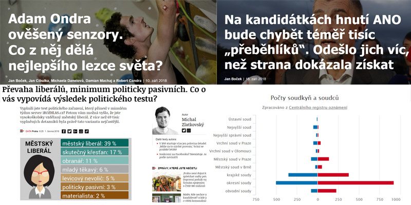

class: center, middle # <strike>Špinavé</strike> triky při shánění GIS dat ## ČVUT GIS Day 2020 <img src="./img/logo.jpg" class="logo"> ### Jan Cibulka, [jan.cibulka@rozhlas.cz](mailto:jan.cibulka@rozhlas.cz) prezentace: [https://datarozhlas.cz/gisday20/](https://datarozhlas.cz/gisday20/) --- ## Datová novinařina v ČRo [data na webu iROZHLAS.cz](https://www.irozhlas.cz/zpravy-tag/datova-zurnalistika)  --- ### Open? Máme centrální katalog [data.gov.cz](https://data.gov.cz/datov%C3%A9-sady?dotaz=aopk), umí hledat podle organizací, formátů, témat...  --- ### Open v zahraničí? [Počasí?](https://data.noaa.gov/onestop/)  [Satelitní snímky Landsat?](https://earthexplorer.usgs.gov/)  [Satelitní snímky Sentinel?](https://scihub.copernicus.eu/)  --- ### Veřejně? **Esri?**  ["arcgis/rest/services" site:*.cz](https://www.google.com/search?q="arcgis/rest/services" site:*.cz) **MapBox?**   například [Kůrovcová mapa](https://www.kurovcovamapa.cz/) + [ogr2ogr](https://wiki.openstreetmap.org/wiki/User:Bgirardot/How_To_Convert_osm_.pbf_files_to_Esri_Shapefiles) **Ulož.to?**  nevim, [třeba ZABAGED](https://uloz.to/hledej?q=zabaged)? --- ### Ou, ale to je NELEGÁLNÍ! <law>Státní orgány a orgány územní samosprávy jsou povinny přiměřeným způsobem poskytovat informace o své činnosti. Podmínky a provedení stanoví zákon.</law> [Čl. 17 odst. 5 Listiny](https://www.zakonyprolidi.cz/cs/1993-2/zneni-19990101#cl17-5) Geodata _obvykle_ patří pod [zákon o právu na informace o životním prostředí](https://www.zakonyprolidi.cz/cs/1998-123/zneni-20150901#f4446027). Případně pořád máme [klasické právo na informace](https://www.zakonyprolidi.cz/cs/1999-106). --- ### A co Autorský zákon? <law>...je jedinečným výsledkem tvůrčí činnosti autora...</law> [§ 2 odst. 1 AutZ](https://www.zakonyprolidi.cz/cs/2000-121/zneni-20190215#p2) <law>Přístup k prostorovým datům bude odepřen, pokud by tím byla porušena ochrana práv <b>třetích osob</b> k předmětu práva autorského...</law> [§ 11d odst. 1 InfŽP](https://www.zakonyprolidi.cz/cs/1998-123/zneni-20150901#p11d-1) _Ke čtení kap. 3 Výzkumná data ve světle absolutních majetkových práv [Výzkumná data a výzkumné databáze. Právní rámec zpracování a sdílení vědeckých poznatků](https://obchod.wolterskluwer.cz/cz/vyzkumna-data-a-vyzkumne-databaze-pravni-ramec-zpracovani-a-sdileni-vedeckych-poznatku.p4405.html)_ --- ### A fakt to funguje? **ČHMÚ** [Počasí, věc veřejná. Meteorologové po letech sporů začali poskytovat historické záznamy](https://www.irozhlas.cz/zpravy-domov/chmu-pocasi-data-historicke-zaznamy-o-pocasi-pravo-na-informace_2003260832_elev) **ZÚ** <law>Zeměměřický úřad zveřejňuje údaje databáze, ortofota České republiky, státního mapového díla, databázového souboru geografického názvosloví a bodových polí bezplatně jako otevřená data.</law> [§ 5, Sněmovní tisk 1029](https://www.psp.cz/sqw/historie.sqw?o=8&t=1029) _(btw. ten spor oficiálně [pořád běží](https://infosoud.justice.cz/InfoSoud/public/search.do?org=MSPHAAB&krajOrg=MSPHAAB&cisloSenatu=15&druhVec=A&bcVec=44&rocnik=2018&typSoudu=os&autoFill=true&type=spzn) ;))_ --- ## Dotazy? [iROZHLAS.cz](https://www.irozhlas.cz/zpravy-tag/datova-zurnalistika) prezentace: [https://datarozhlas.cz/gisday20/](https://datarozhlas.cz/gisday20/) Případně pište na [jan.cibulka@rozhlas.cz](mailto:jan.cibulka@rozhlas.cz)